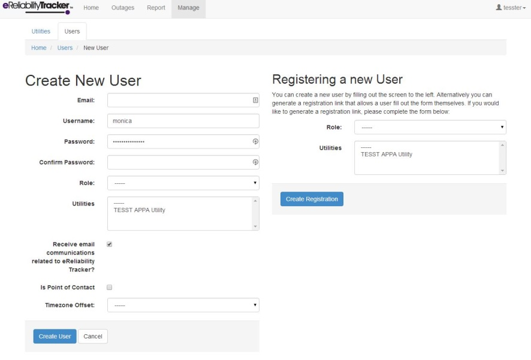
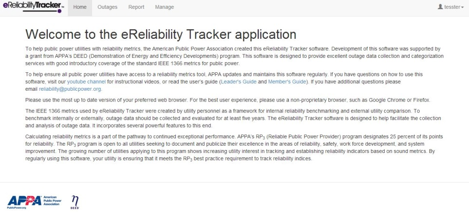

Introduction¶
Log-in/Create an Account¶
You should have received a registration link that allows you to fill out the form yourself. When you click on the registration link, the screen shown below should open up:
Enter the required information, which includes:
- Username
- Password
Then you must read the terms and conditions and click the box to accept them.
Then click the “Create User” button.
If creating the account is successful, then the welcome page should open up and a green label should say that the account was successfully created.
Since your role (permission level) is “Leader,” the screen will have all of the tabs shown in the image below:
Types of Users and Permissions¶
- Spectator
- This type of user has permissions to view the report and home tabs in the system.
- Member
- This includes people working in the field who can document outages and view reports.
- Leader
- Document outages, create profiles for utility personnel and can view and run reports.